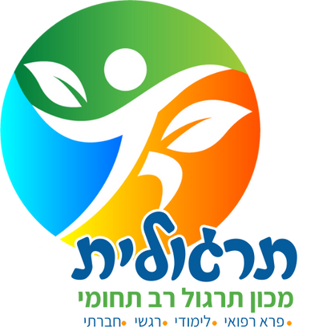

ברוכים הבאים לתרגולית
המרכז הרב תחומי לתרגול בירושלים
נמאס לכם לחכות בתור? למלא טפסים? הילד שלכם זקוק לתרגול נוסף? תרגולית היא הפתרון עבורכם!
בתרגולית, אנו מאמינים שכל ילד ראוי לקבל את התמיכה והכלים הנדרשים להצלחה. המרכז שלנו מציע מגוון רחב של שירותים מקצועיים, המותאמים אישית לצרכים הייחודיים של כל ילד. אצלנו, הילדים לא רק מקבלים טיפול - הם חווים הצלחות, בונים ביטחון עצמי ומגלים את הפוטנציאל האמיתי שלהם.
ריפוי בעיסוק
קבוצות התרגול מתמקדות בשיפור היכולות המוטוריות, הקוגניטיביות והחברתיות של הילד. המטפלים שלנו עובדים על פיתוח מיומנויות יומיומיות, שיפור הקואורדינציה, וחיזוק הביטחון העצמי.

קלינאות תקשורת
קבוצות התרגול מסייעת לילדים עם קשיי שפה, דיבור ותקשורת. הטיפולים שלנו כוללים תרגול של מיומנויות חברתיות, העשרת אוצר מילים, ופיתוח כישורי תקשורת חברתית.
הוראה מתקנת בשיטה המונטסורית
השיטה המונטסורית מתמקדת בפיתוח עצמאות, יצירתיות וחשיבה ביקורתית. אנו מיישמים את עקרונות השיטה בהוראה מתקנת, תוך התאמה אישית לקשיי הלמידה של כל ילד.

ספורט טיפולי
ספורט טיפולי משלב פעילות גופנית עם מטרות טיפוליות. אנו מציעים מגוון פעילויות המותאמות לצרכי הילד, כגון משחקי כדור, תרגילי שיווי משקל ופעילויות קבוצתיות.
תרפיה באמצעות בעלי חיים
תרפיה באמצעות בעלי חיים היא שיטת טיפול ייחודית המשתמשת באינטראקציה עם בעלי חיים לקידום בריאות נפשית ופיזית. הטיפול מסייע בפיתוח אמפתיה, ביטחון עצמי, ומיומנויות תקשורת, תוך יצירת סביבה מרגיעה ותומכת.